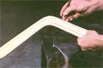
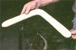
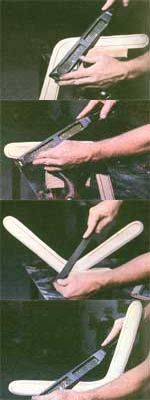
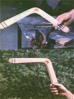
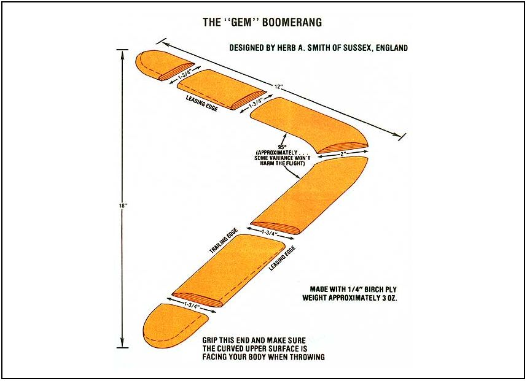

Kent Meyer's article, "The Beauty of the Boomerang" (MOTHER NO. 70), inspired so much enthusiasm that we've compiled a few more tips on how to make the magic flying sticks.
See image gallery for details.
|
 [1] Mark the rasping lines on the blank. |
 Then [2] file away the undercuts from the bottom leading edge of each wing. |
 (3 through 6) With that done, carefully rasp the designated areas, tapering them to a 1/8"" edge. |
|
 The Gem boomerang can now be sanded smooth |
 |
|